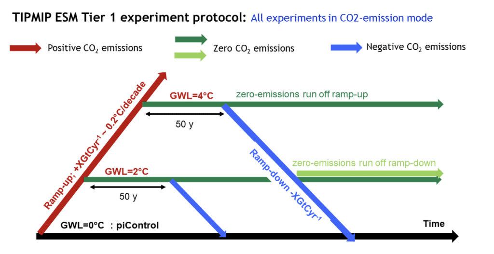

ESM protocol¶

A visual representation of the different phase 1 experiments and how they are connected to each other.¶
For more information: The TIPMIP Earth System Model experiment protocol: phase 1.

A visual representation of the different phase 1 experiments and how they are connected to each other.¶
For more information: The TIPMIP Earth System Model experiment protocol: phase 1.